Resultra takes a maintenance problem from the moment someone reports it to the moment it is fixed and signed off. Every job shows what happened, where, who reported it, how urgent it is, who is responsible, its status, what happens next, photos, approvals and the full history. Every job is also a branded job card you can print or download.
ABCD-1234) or a link with it./join and type the code./login.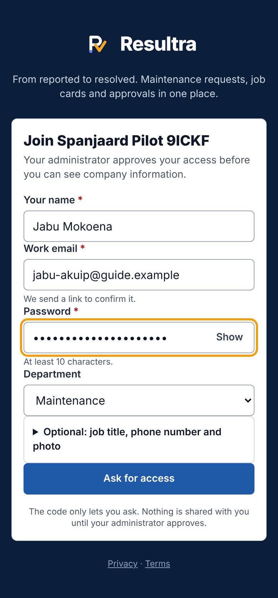
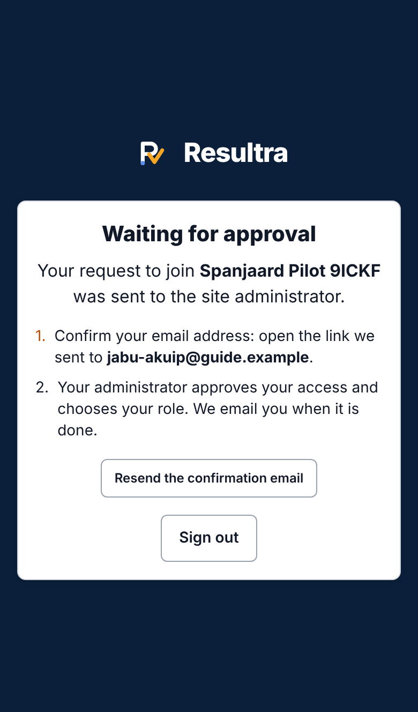
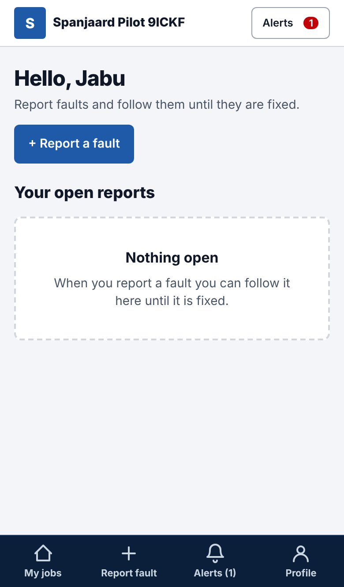
On a computer the menu is on the left: Dashboard, My jobs (technicians), Reports, Jobs, and more depending on your role. On a phone the menu is at the bottom. The dashboard shows live counts of jobs at every stage; tap a tile to see those jobs. The Jobs page has Open now and History tabs and priority buttons.
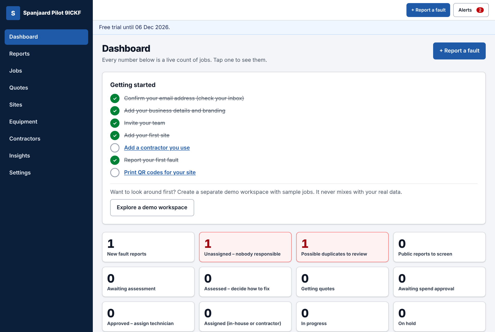
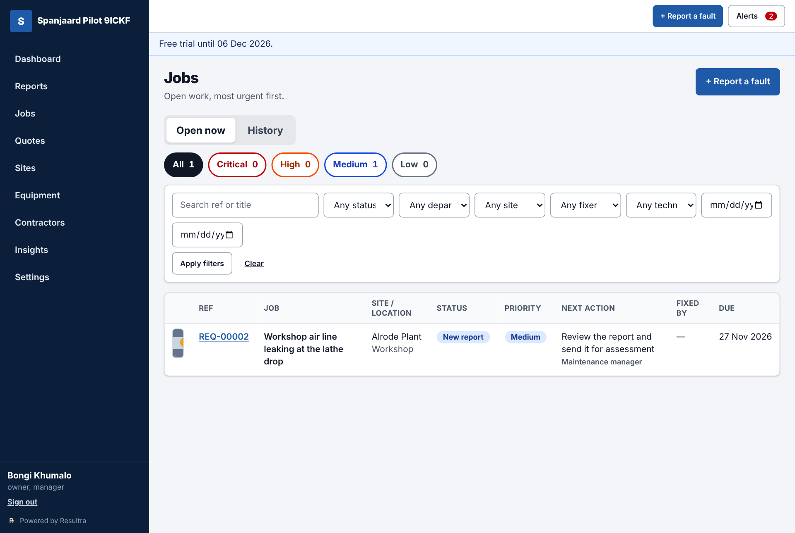
Every site, area and machine can have its own QR sign. Scan it with your phone camera. The place is filled in for you. If someone is hurt or in danger, follow your site's emergency procedure first.
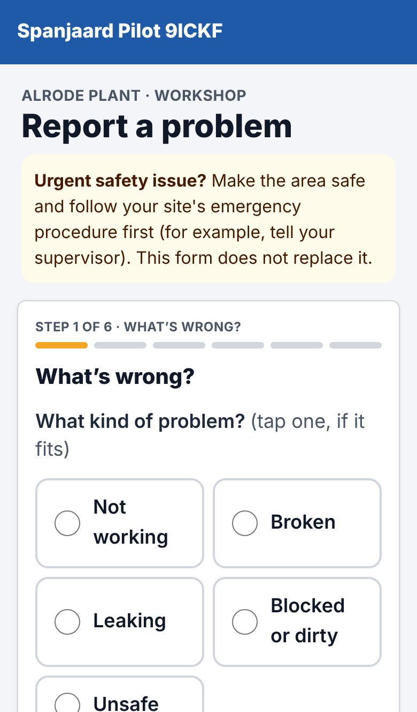
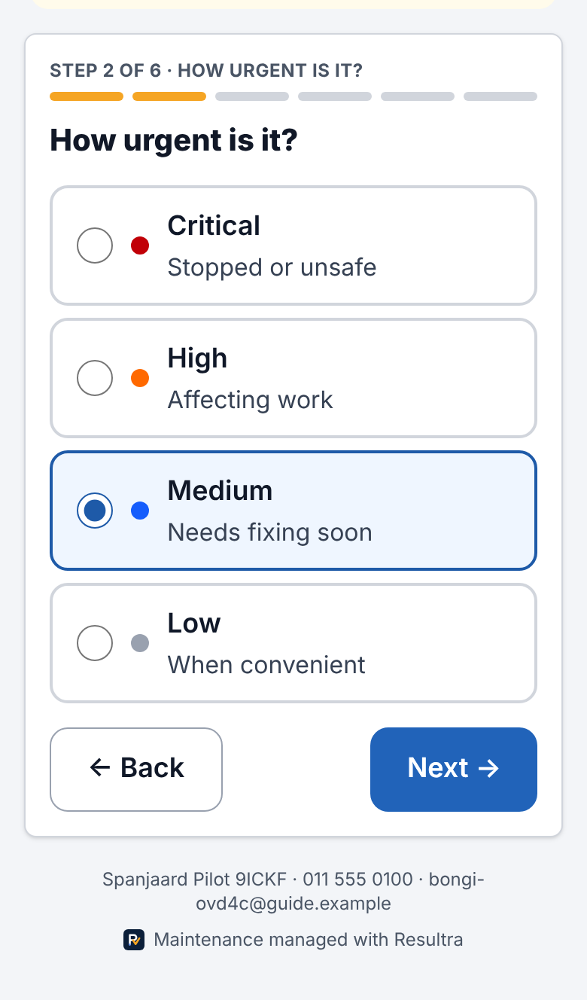
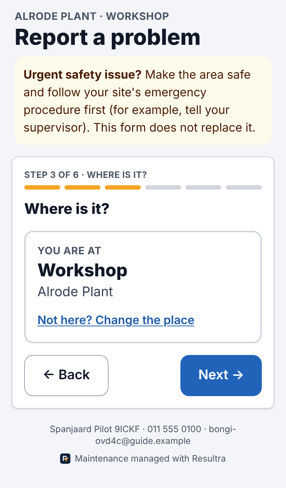
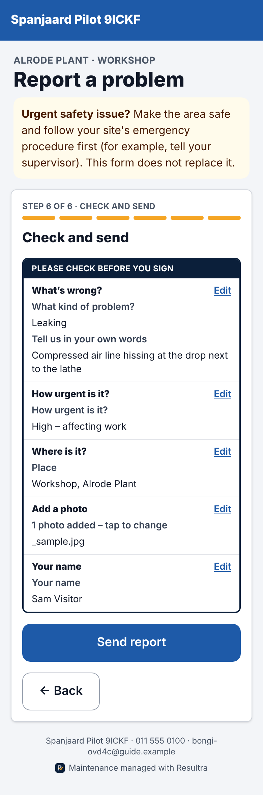
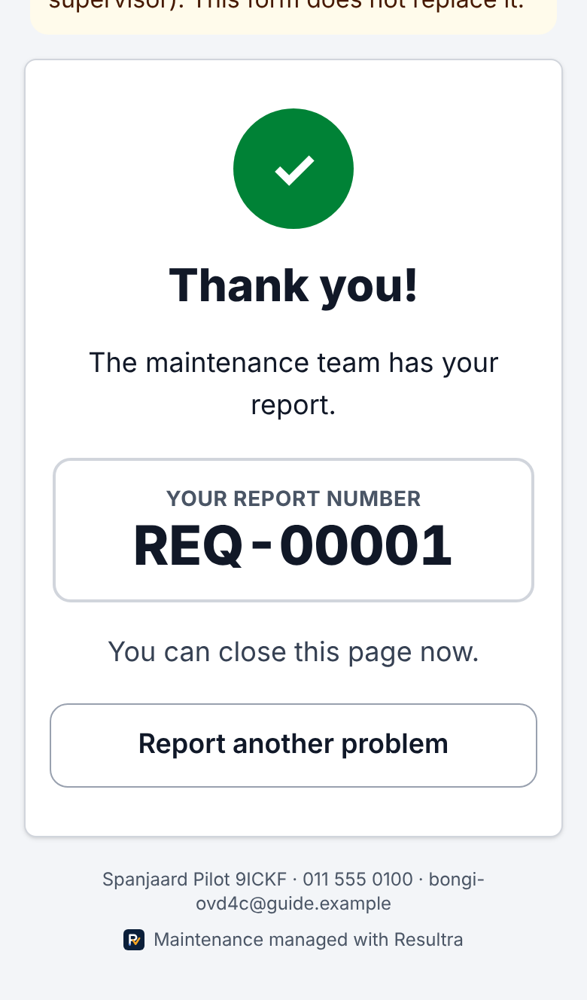
Signed in, tap + Report a fault. The form goes one step at a time: what is wrong, how urgent, where, photo, then a review. Maintenance staff can also choose the category and the responsible department. Resultra warns the maintenance manager if the report looks like one already open.
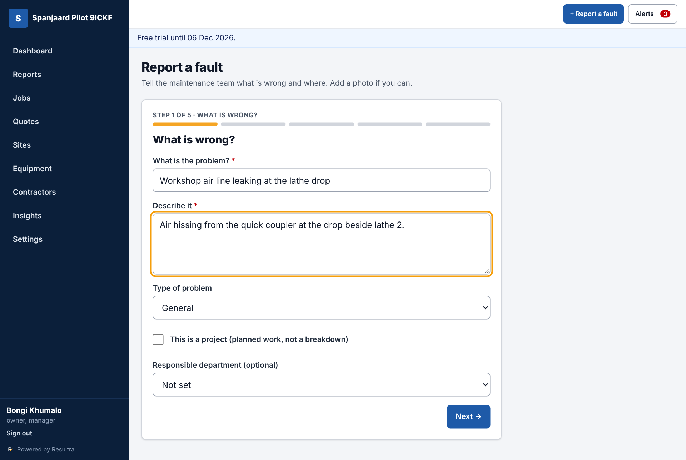
Everything about a job is on one page: status and priority, What happens next with the responsible person, the actions you may take, photos, the assessment, quotes, the work log, completion, signatures, related reports and the full activity history.
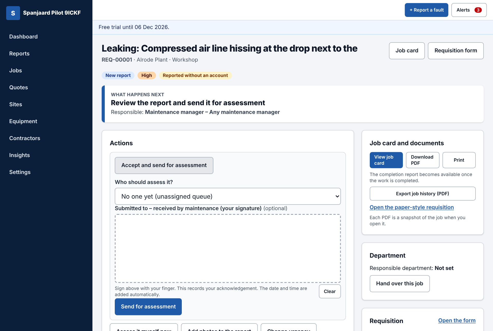
Open the job (from My jobs or the alert), tap Start work, add progress notes, then Work finished – submit evidence: what was done, an after photo or document, the root cause, and (in food-handling areas) the tools/clean check. Review and submit.
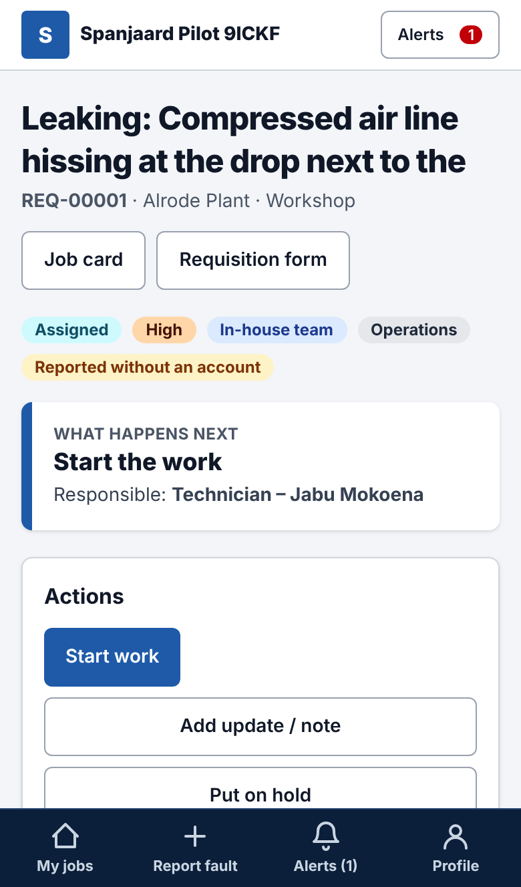
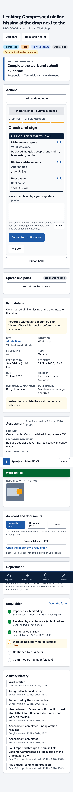
On the job page, Job card and documents: View job card opens the branded PDF inside Resultra with Print and Download PDF. On a phone, use Open in a new tab or Download PDF. Every PDF shows when it was generated and the status at that moment: it is a snapshot, not the live record. The QR code on a printed card opens the job after signing in.
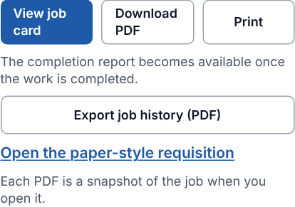
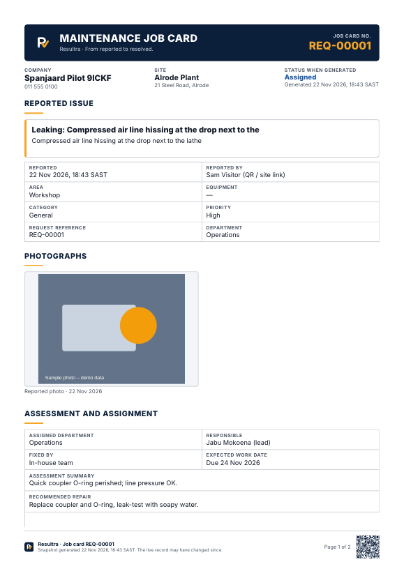
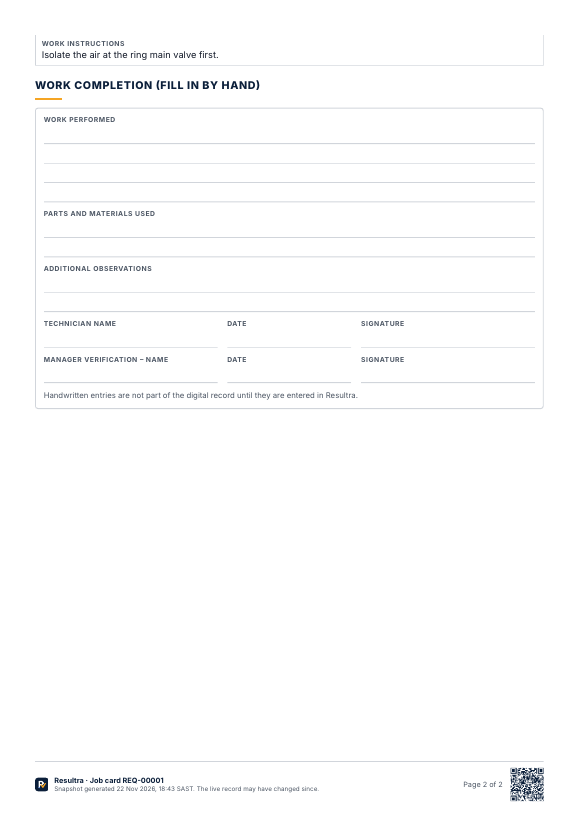
The person who reported the fault answers Is it fixed? (or signs on the technician's phone). If it is not fixed, the job goes back with a reason. Then the maintenance manager signs off and closes it. The completion report (PDF) then shows before and after photos, the work done, the verification and recorded signatures.
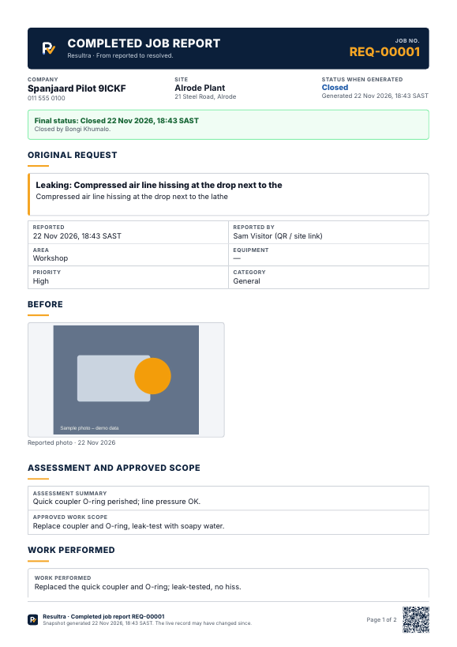
The activity history on the job page lists every step with time and person. Maintenance staff can export the full job history as a PDF (timeline, handovers, quotes, approvals, reopenings, comments and an attachment index). If the fault comes back after a job is closed, use The fault came back – report a repeat: the new job is linked to the old one.
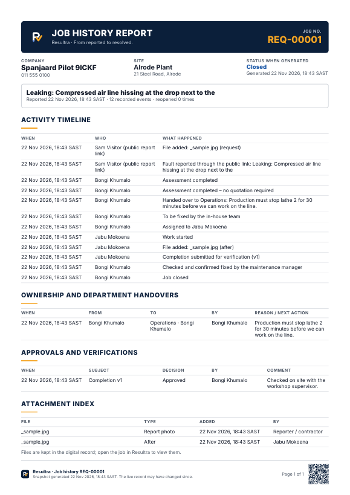